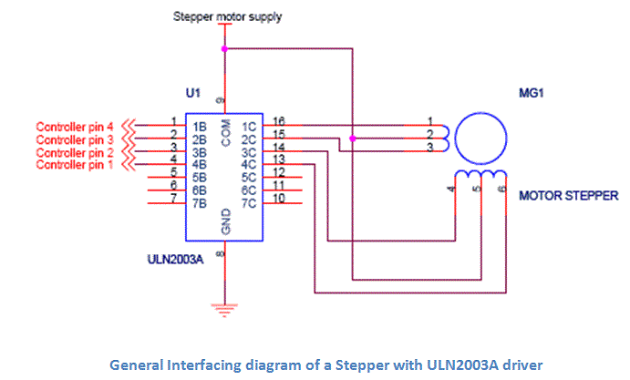

Stepping Sequence
Interfacing Diagram
Step Angle
Half Stepping
C Code for 8051 Micro-controller
Stepper Motor v/s Servo Motor
A stepper motor is a type of DC motor that rotates in steps. When electrical signal is applied to it, the motor rotates in steps and the speed of rotation depends on the rate at which the electrical signals are applied and the direction of rotation is dependent on the pattern of pulses that is followed.
A stepper motor is made up of a rotor, which is normally a permanent magnet and it is, as the name suggests the rotating component of the motor. A stator is another part which is in the form of winding. In the diagram below, the center is the rotor which is surrounded by the stator winding. This is called as four phase winding.
Stepper Motor
Working of Stepper Motor
The centre tap on the stator winding allows the electric current in the coil to change direction when the winding are grounded. The magnetic property of the stator changes and it will selectively attract and repel the rotor, thereby resulting in a stepping motion for the motor.
Stepping Sequence
In order to get correct motion of the motor, a stepping sequence has to be followed. This stepping sequence gives the voltage that must be applied to the stator phase. Normally a 4 step sequence is followed.
When the sequence is followed from step 1 to 4, we get a clock wise rotation and when it is followed from step 4 to 1, we get a counter clockwise rotation.
| Step No | A | A | B | B |
|---|---|---|---|---|
| 1 | 1 | 0 | 0 | 1 |
| 2 | 1 | 1 | 0 | 0 |
| 3 | 0 | 1 | 1 | 0 |
| 4 | 0 | 0 | 1 | 1 |
Interfacing Diagram
The diagram below shows the interfacing of stepper motor to a micro-controller. This is general diagram and can be applied to any micro-controller family like PIC micro-controller, AVR or 8051 micro-controller.

Since, the micro-controller cannot provide enough electric current to run the motor, a driver like a ULN2003 is used to drive the motor. Similarly, individual transistors or any other driver IC can also be used to drive the motor. See to it that if required, the external pull up resistors is connected to pins depending on the micro-controller you use. The motor must never be directly connected to the controller pins. The motor Voltage depends on the size of the motor.
A typical 4 phase uni-polar stepper motor has 5 terminals. 4 phase terminals and one common terminal of the center tap that is connected to ground.
The programming algorithm for continuous rotation in clockwise mode is given below-
1) Initialize the port pins used for the motor as outputs
2) Write a common delay program of say 500 ms
3) Output first sequence-0 x 09 on the pins
4) Call delay function
5) Output second sequence-0 x 0 c on the pins
6) Call delay function
7) Output third sequence-0 x 06 on the pins
8) Call delay function
9) Output fourth sequence-0 x 03 on the pins
10) Call delay function
11) Go to step 3
Step Angle
The number of steps required to complete one full rotation depends on the step angle of the stepper motor. The step angle can vary from 0.72 degrees to 15 degrees per step. Depending on that 500 to 24 steps may be required to complete one rotation. In position control applications the selection on motor should be based on the minimum degree of rotation that is required per step.
Half Stepping
Stepper motors can be used at half the actual step angle. This is called half stepping. Suppose a motor is rated for 15 degrees per step, then it can be programmed in such a way that it rotates at 7.5 degrees per step by applying a special half stepping sequence to it.
| Step No | A | A | B | B |
|---|---|---|---|---|
| 1 | 1 | 0 | 0 | 1 |
| 2 | 1 | 0 | 0 | 0 |
| 3 | 1 | 1 | 0 | 0 |
| 4 | 0 | 1 | 0 | 0 |
| 5 | 0 | 1 | 1 | 0 |
| 6 | 0 | 0 | 1 | 0 |
| 7 | 0 | 0 | 1 | 1 |
| 8 | 0 | 0 | 0 | 1 |
C Code for 8051 Micro-controller
#include<reg51.h>
#define out P1 //motor connected on Port 1 lower
#define step 50 //one revolution for 1.8 degree motor
unsigned char i;
void delay (unsigned char k);
void main()
{
for( i = 0; i<step; i++ )
{
out=0x09;
delay();
out=0x0c;
delay();
out=0x06;
delay();
out=0x03();
delay();
}
void delay(unsigned char k)
{
unsigned int j;
for(;k>0;k--)
{
for(j = 0; j<40000; j++);
}
Stepper Motor v/s Servo Motor
Both the stepper motor and servo motor are used primarily in position control applications. But there lies a difference in their working and construction. The stepper motor has a large number of poles or teeth on their rotor and these teeth act as magnetic north and south poles which gets attracted or repelled to the electrically magnetized coil of the stator. This helps in the stepping motion that a stepper generates.
On the other hand, in a servo motor the position is controlled by the specialized circuit and the feedback mechanism, which generates an error signal to move the motor shaft.
 by
by